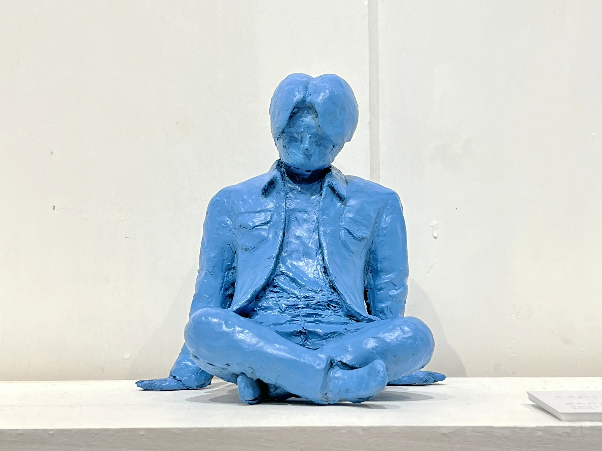

ここにいる
椎名厚太
エポキシ樹脂、生成 AI / レジンキャスト
2025
生成AIによって出力させた画像をもとに造形を行い、立体化を試みた作品。
粘土原型を制作した後にエポキシ樹脂に置き換え、二重に複製を行っている。

エポキシ樹脂、生成 AI / レジンキャスト
2025
生成AIによって出力させた画像をもとに造形を行い、立体化を試みた作品。
粘土原型を制作した後にエポキシ樹脂に置き換え、二重に複製を行っている。